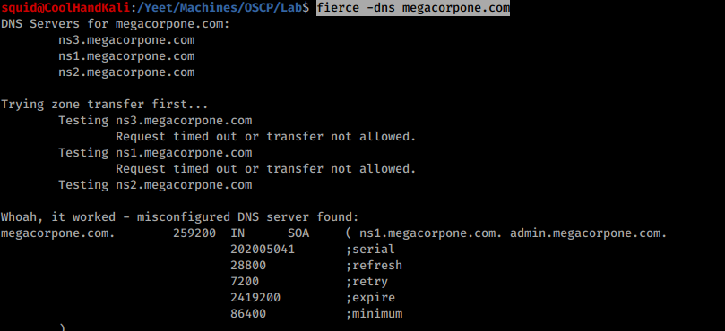
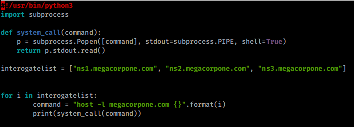
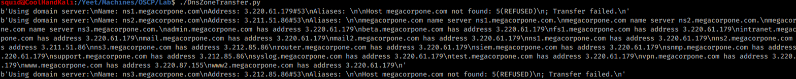
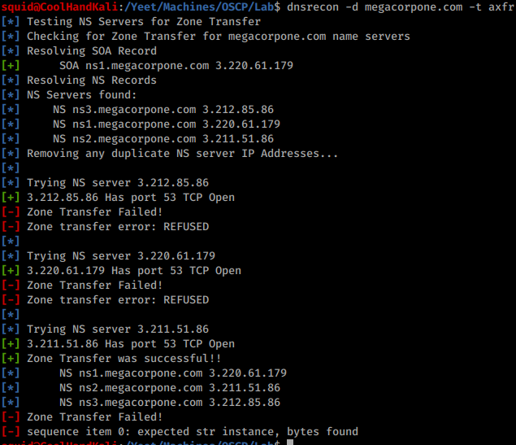

7.1.6.3 Exercises
☐ Find the DNS servers for the megacorpone.com domain.
☐ Write a small script to attempt a zone transfer from megacorpone.com using a higher-level scripting language such as Python, Perl, or Ruby.
☐ Recreate the example above and use dnsrecon to attempt a zone transfer from megacorpone.com.
